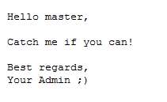

Digital Forensic Challenge Images (Datasets)
This page contains all the digital forensic challenges (datasets) I prepare either for a training course I teach, a DFIR challenge done @Security4Arabs, testing an application or written code, or just for fun! The current challenges are: Challenge #1, Challenge #2, Challenge #3, Challenge #4 and different Linux Forensic Cases. More will be added soon, so keep checking the site for updates.
Note: if you have any comments or notes, please don't hesitate to contact me, I will do my best to get back to you ASAP. Also, if you use any of my work for your training, presentation, etc, I would appreciate if you inform me. Don't worry, I won't charge you anything, and use them for free as you like. I just want to be informed for referencing purposes only.
Challenge #1 - Web Server Case
- System Image: here
- System Memory: here
- Hashes: here
- Passwords = here
- Other download URLs from (Archive.org) could be found here: here
- What type of attacks has been performed on the box?
- How many users has the attacker(s) added to the box, and how were they added?
- What leftovers (files, tools, info, etc) did the attacker(s) leave behind? (assume our team arrived in time and the attacker(s) couldn’t clean and cover their tracks)
- What software has been installed on the box, and were they installed by the attacker(s) or not?
- Using memory forensics, can you identify the type of shellcode used?
- What is the timeline analysis for all events that happened on the box?
- What is your hypothesis for the case, and what is your approach in solving it?
- Is there anything else you would like to add?
Challenge #2 - User Policy Violation Case
- System Image: here
- Hashes: here
- Password = here
- Other download URLs from (Archive.org) could be found here: here
- File Carving, Custom Carving, and Keyword Searching
- File System Forensics - NTFS
- Deep Windows Registry Forensics: System and User Hives
- SYSTEM
- SOFTWARE
- SAM
- NTUSER.DAT
- USRCLASS.DAT
- Other Windows Files: LNK, Jump Lists, Libraries, etc
- Application Compatibility Cache (ShimCache)
- Analyzing Windows Search (Search Charm)
- Analyzing Thumb Caches
- Analyzing Prefetch Files
- Analyzing Recycle Bin(s)
- USB Forensics
- Events Analysis
- Email Forensics: Web and Outlook
- Browser Forensics: Internet Explorer and Google Chrome
- Skype Forensics
Challenge #3 - Mystery Hacked System
- System Image: here
- Hashes: here
- Password = here
- Other download URLs from (Archive.org) could be found here: here
- How was this system hacked? (What is your hypothesis)
- What evidence did you find that proves your hypothesis?
- How did you approach and solve the case? (write a report)
- Anything you would like to add?
Challenge #4 - Launching Attacks from Alternate Data Streams
This is another digital forensics image that was prepared for to test the following:
- Hidding EXEs in ADS
- Running Malicious EXEs from ADS
- Checking if Windows Defender (or other AVs), truly scan ADS
- Hiding Malicious EXEs in Stealthy ADS
- Showing How all of the above methods could be detected
- Forensic Image: here
- Hashes: here
- File List: here
- Other download URLs from (Archive.org) could be found here: here
Linux Forensic Cases
These are four different cases to cover Linux forensic investigations and a brief could be found below:
- Case1: Compromised Web Server
- Case2: Compromised Hadoop (HDFS) Cluster
- Case3: Attacker's Kali Linux System
- Case4: Investigating/Hunting Hidden Processes
A company’s web server has been breached through their website. Our team arrived just in time to take a forensic image of the running system and its memory for further analysis. All of the case files can be found here. Old upload could be found below (I'm using them as an alternative now):
Important Note: do not use commercial tools for your own learning benefit.
End of Case.
This is another digital forensics image that was prepared to cover a full Windows Forensics course.
This image covers most if not all of the recent system artifacts that you might encounter. Let me know if you need any help or if you are an instructor and want the answers to each part of the case. I will only send the answers to verified instructors.
Due to lots of requests, I have decided to compile a manual or a book for the second image with Q&As to help you go through the challenge and solve every part of it. URLs and further explanations will be provided very soon. Stay tuned my friends and happy hunting ;)
End of Case.
This is another digital forensics image that was prepared to for a Windows and File System Forensics course. This is a little of a mystery, so I won't be giving out too much clues about what you can learn in this case, but I assure you, you can learn a lot ;)
One day an IT dept. guy/gal came to work to find the message below written in a file on his/her system! He/Her immediately reported that to you. Now you must: 
End of Case.
End of Case.
End of Summary.
![[Valid RSS]](images/valid-rss-rogers.png "Validate my RSS feed")